Overview
Primary research: Netnography, Autonetnography, Interviews
Secondary research: Articles, Research papers, Documentaries
In the fast-paced world of technological advancements, this project looks into how human social behaviours exist in a virtual platform and how the interface triggers or facilitates such behaviour.
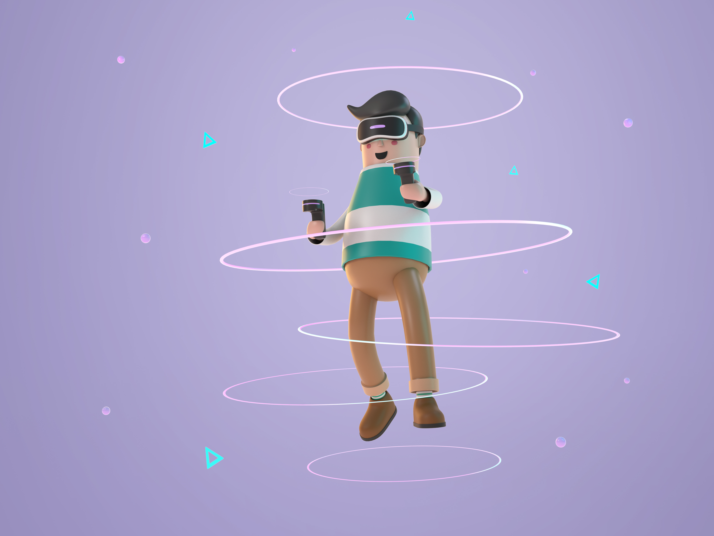
What Rules the World Today?
Information and content. This information is often gatekept and considered Intellectual Property. Gatekeeping information and monetizing it makes it inaccessible to all classes of people.
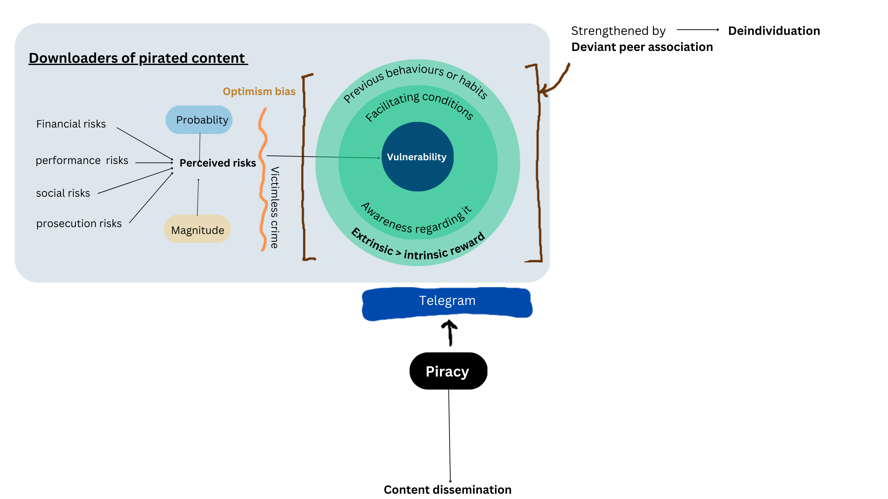
Triangle of Digital Responsibility
Piracy as acceptable and normative behavior. The blurred line between ethical and unethical download creates a complex moral landscape that interface design must navigate.
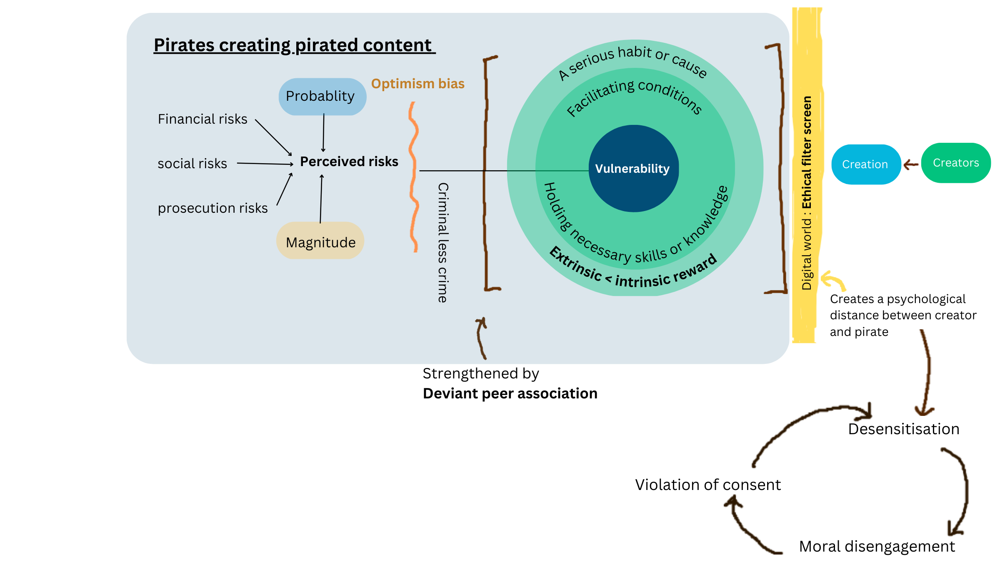
Two Schools of Thought
Known/accepted deviancy: It isn't theft, it's duplication. Gateway for less fortunate people to access high-end content.
Pain to creators: Eats away profits. "Get everything for free" mindset devalues creative work.
Why Does One Indulge in Piracy?
Extrinsic: Saving money, try and buy, perceived utility, expanding collection.
Intrinsic: Excitement of getting something free, fun and achievement, breaking the rule.
Why Telegram?
Up to 50 public/private groups per day. Unlimited channel members. 500+ resources. Wide reach, free, stable, ad-free. Telegram's architecture makes it an ideal host for piracy culture — with features that facilitate rapid, anonymous content sharing at scale.
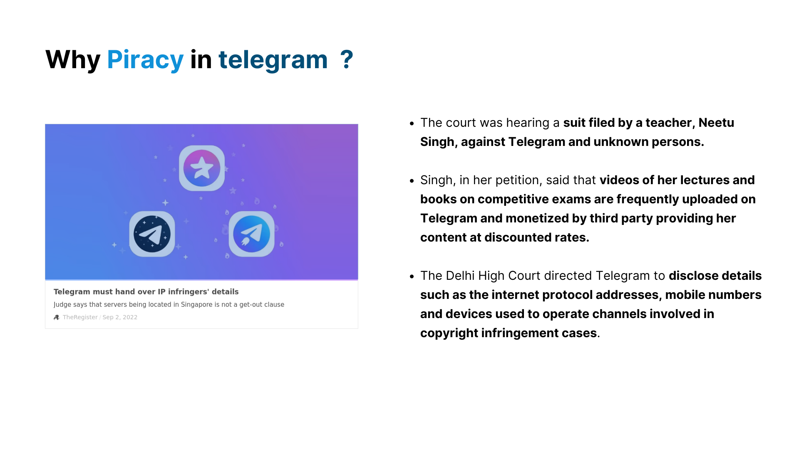
The Research Question
"How might we make users more conscious of their choice to indulge in piracy and enable the platform to keep a stronger check on it?"
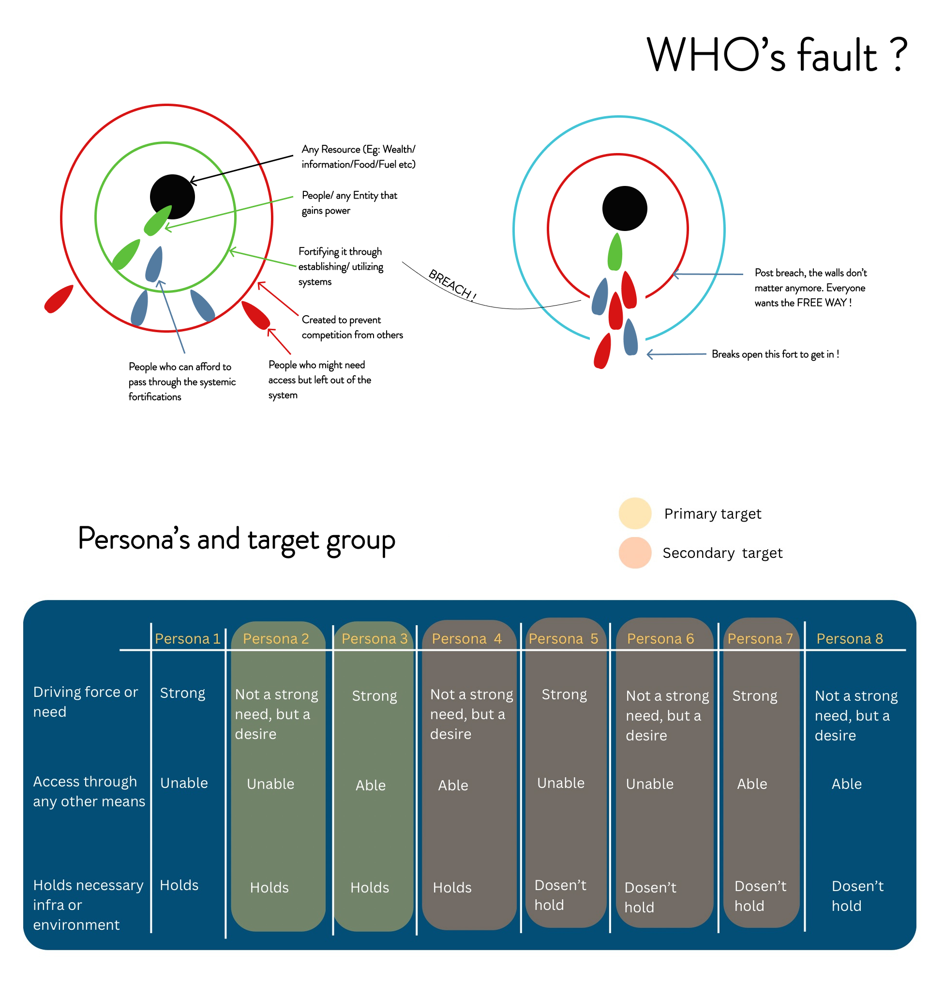
Research and UX Strategies
Analysis of existing UI, design interventions and their operationalization. We studied how interface cues, friction, and affordances shape user choices in digital spaces.
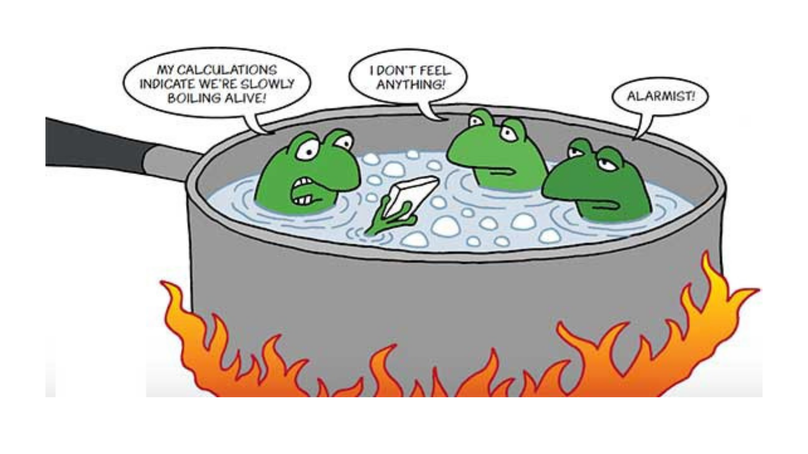
Solutions
Divide the mass, paralyze the spreading channels. Business model considerations that protect creators while respecting user needs.
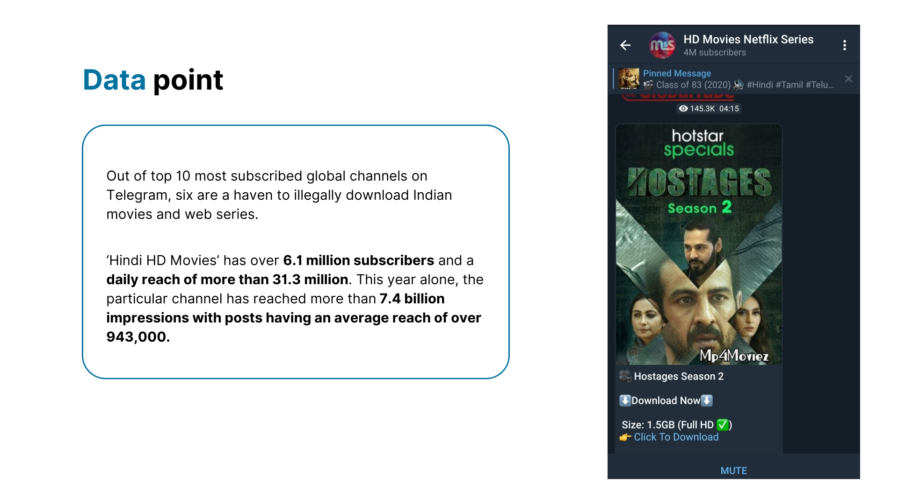
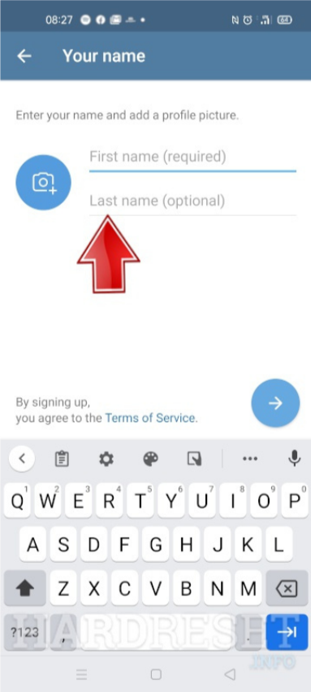
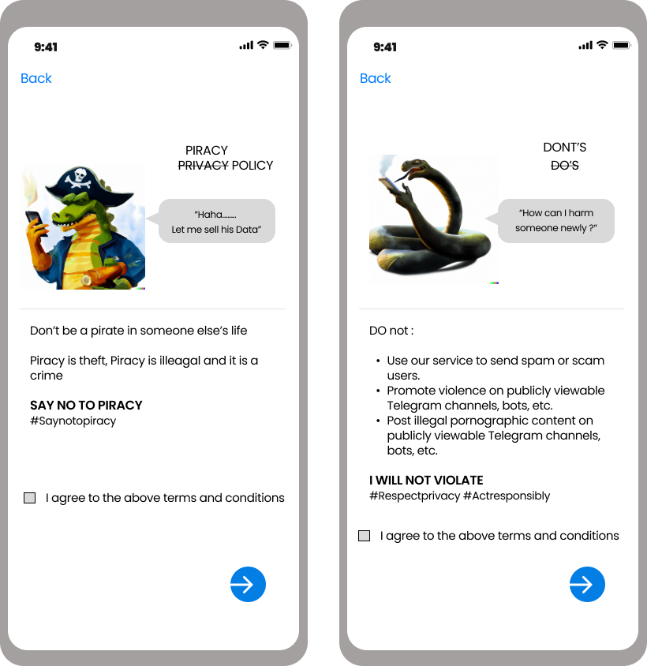
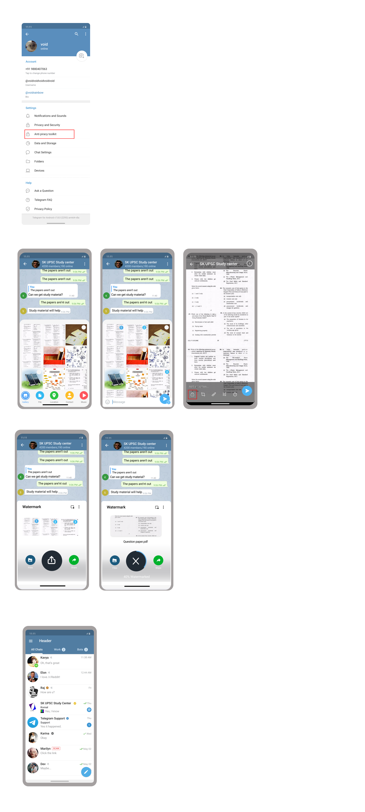
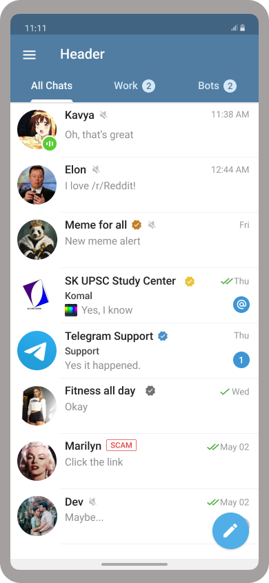